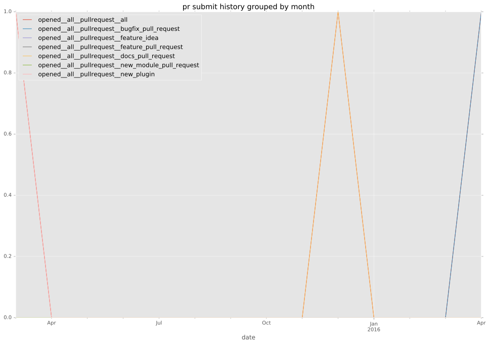
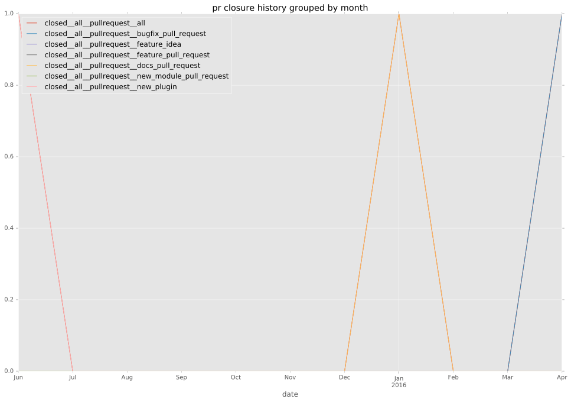
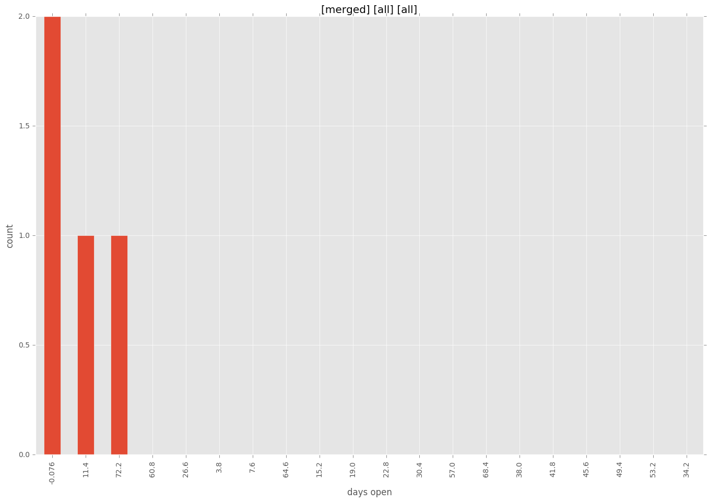
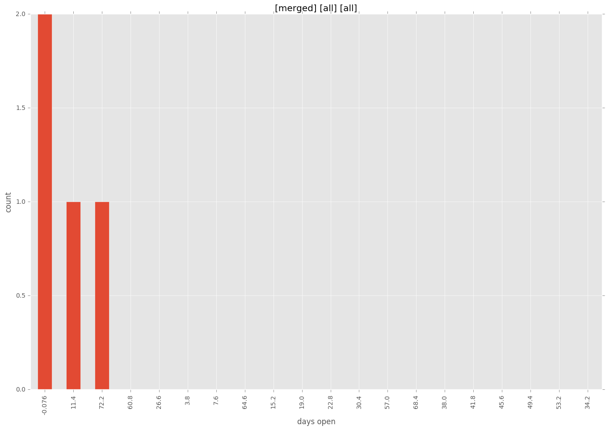

authors
- emonty
maintainers
- emonty
- shrews
- juliakreger
- j2sol
- rcarrillocruz
contributors
- Labutin : 1 commits
- Shrews : 2 commits
- TerryHowe : 1 commits
- bcoca : 1 commits
- emonty : 7 commits
total issue counts
pullrequest: 4
docs pull request: 2
bugfix pull request: 1
feature idea: 1
issue: 2
new plugin: 1
bug report: 1
issue history
pullrequest history


days open by issue type
all
count: 9
std: 32.1718475966
min: 0
max: 76
median: 13.0
mean: 25.4444444444
pullrequest
count: 0
std: nan
min: nan
max: nan
median: nan
mean: nan
docs pull request
count: 4
std: 6.35085296109
min: 2
max: 13
median: 7.5
mean: 7.5
bugfix pull request
count: 2
std: 0.0
min: 0
max: 0
median: 0.0
mean: 0.0
feature idea
count: 0
std: nan
min: nan
max: nan
median: nan
mean: nan
issue
count: 0
std: nan
min: nan
max: nan
median: nan
mean: nan
new plugin
count: 2
std: 0.0
min: 76
max: 76
median: 76.0
mean: 76.0
bug report
count: 1
std: nan
min: 47
max: 47
median: 47.0
mean: 47.0
closures grouped by total days open


 
